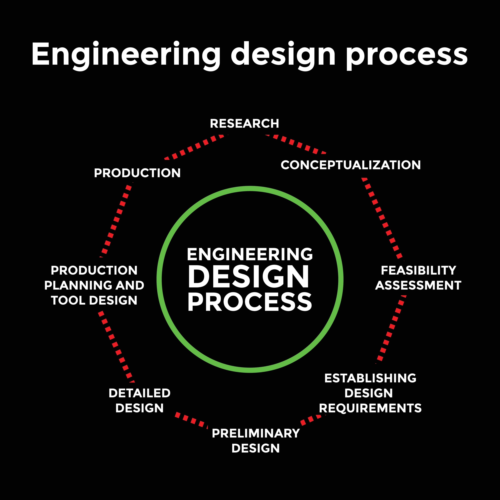

Gateway Tab Reflection
Showcase: The Lesson Behind the Code
The What
As a freshman Computer Science student, I entered a Google Chrome hackathon solo to build an AI-powered Canvas extension. My goal was to use Gemini Nano to prioritize assignments based on difficulty and deadlines. Being new to the ecosystem, I struggled with the basics like virtual environments, file directories, and dependencies. I spent hours daily sitting in the Mantei Center for a week debugging these "silly" errors, only to realize on submission day that I had not taken any necessary Canvas API permissions. While the UI was finished, the project was still non-functional because I had skipped the planning phase.
The So What
This experience was a great reality check. I remembered what I was taught in my ENED course that coding is only one part of the Engineering Design Process. By bypassing the research and brainstorming phases, I failed to anticipate technical risks or verify the feasibility of actually making my project. I realized that technical skills, even with the help of AI, are not enough. Lack of structural planning would always cause some or the other problems. Hard work in the wrong direction is still a setback. A successful project requires a roadmap before even touching the first line of code.

The Now What
Moving forward, I will never skip the preprocess and necessary non-technical steps of a project. I would now prioritize checking if a goal is realistic and measurable before implementation. This experience reshaped my definition of a Global Citizen Scholar. It is someone who combines their technical skills with research to solve problems effectively.